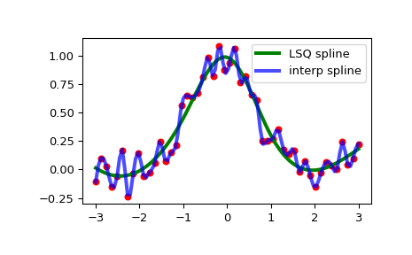

scipy.interpolate.make_lsq_spline¶
-
scipy.interpolate.make_lsq_spline(x, y, t, k=3, w=None, axis=0, check_finite=True)[source]¶ Compute the (coefficients of) an LSQ B-spline.
The result is a linear combination
\[S(x) = \sum_j c_j B_j(x; t)\]of the B-spline basis elements, \(B_j(x; t)\), which minimizes
\[\sum_{j} \left( w_j \times (S(x_j) - y_j) \right)^2\]- Parameters
- xarray_like, shape (m,)
Abscissas.
- yarray_like, shape (m, …)
Ordinates.
- tarray_like, shape (n + k + 1,).
Knots. Knots and data points must satisfy Schoenberg-Whitney conditions.
- kint, optional
B-spline degree. Default is cubic, k=3.
- warray_like, shape (n,), optional
Weights for spline fitting. Must be positive. If
None, then weights are all equal. Default isNone.- axisint, optional
Interpolation axis. Default is zero.
- check_finitebool, optional
Whether to check that the input arrays contain only finite numbers. Disabling may give a performance gain, but may result in problems (crashes, non-termination) if the inputs do contain infinities or NaNs. Default is True.
- Returns
- ba BSpline object of the degree k with knots t.
See also
BSplinebase class representing the B-spline objects
make_interp_splinea similar factory function for interpolating splines
LSQUnivariateSplinea FITPACK-based spline fitting routine
splrepa FITPACK-based fitting routine
Notes
The number of data points must be larger than the spline degree k.
Knots t must satisfy the Schoenberg-Whitney conditions, i.e., there must be a subset of data points
x[j]such thatt[j] < x[j] < t[j+k+1], forj=0, 1,...,n-k-2.Examples
Generate some noisy data:
>>> x = np.linspace(-3, 3, 50) >>> y = np.exp(-x**2) + 0.1 * np.random.randn(50)
Now fit a smoothing cubic spline with a pre-defined internal knots. Here we make the knot vector (k+1)-regular by adding boundary knots:
>>> from scipy.interpolate import make_lsq_spline, BSpline >>> t = [-1, 0, 1] >>> k = 3 >>> t = np.r_[(x[0],)*(k+1), ... t, ... (x[-1],)*(k+1)] >>> spl = make_lsq_spline(x, y, t, k)
For comparison, we also construct an interpolating spline for the same set of data:
>>> from scipy.interpolate import make_interp_spline >>> spl_i = make_interp_spline(x, y)
Plot both:
>>> import matplotlib.pyplot as plt >>> xs = np.linspace(-3, 3, 100) >>> plt.plot(x, y, 'ro', ms=5) >>> plt.plot(xs, spl(xs), 'g-', lw=3, label='LSQ spline') >>> plt.plot(xs, spl_i(xs), 'b-', lw=3, alpha=0.7, label='interp spline') >>> plt.legend(loc='best') >>> plt.show()
NaN handling: If the input arrays contain
nanvalues, the result is not useful since the underlying spline fitting routines cannot deal withnan. A workaround is to use zero weights for not-a-number data points:>>> y[8] = np.nan >>> w = np.isnan(y) >>> y[w] = 0. >>> tck = make_lsq_spline(x, y, t, w=~w)
Notice the need to replace a
nanby a numerical value (precise value does not matter as long as the corresponding weight is zero.)